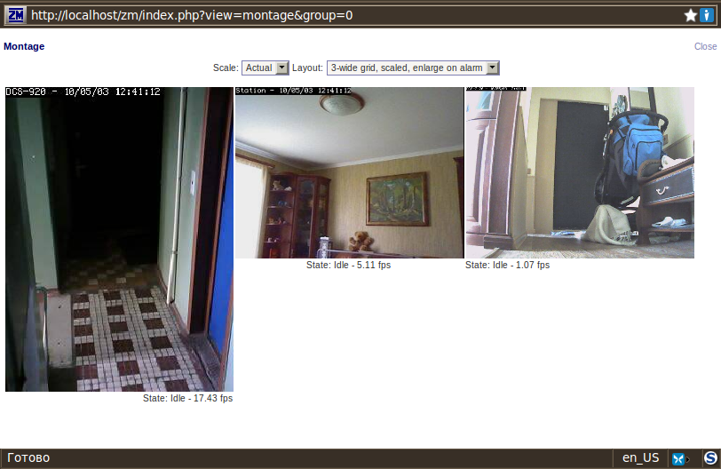
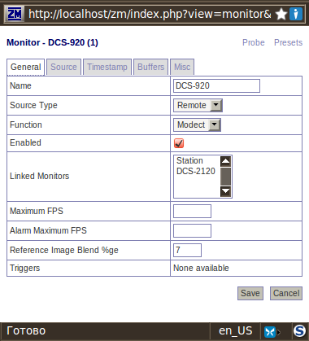
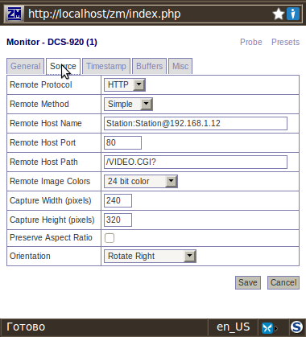
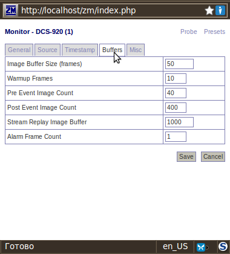
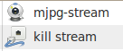
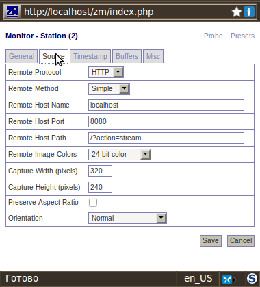
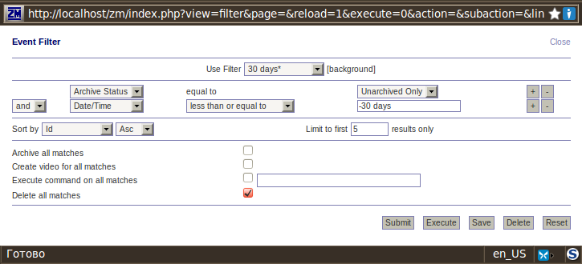
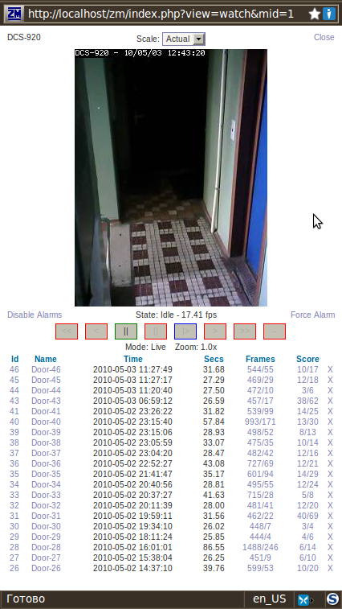
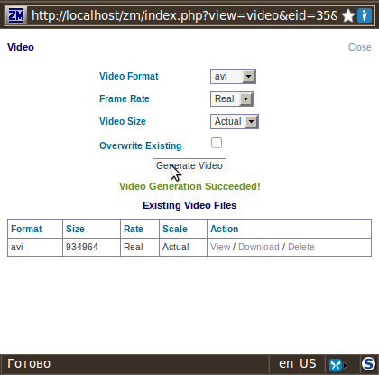

Система видеонаблюдения, которую я собираюсь описать, используется в моем жилище более 6 лет. За это время мы успели сменить квартиру, родить 2 сыновей и вырастить Ubuntu 8.04 до 14.04
Три принципиально разные камеры мониторят входную дверь, оповещают маму на кухне о проснувшемся ребенке и позволяют заглянуть, все ли в порядке дома, из любой точки мира.
Статья писалась для Ubuntu 10.04 и ZoneMinder 1.24.4 Последняя правка Xubuntu 14.04 и ZoneMinder 1.26.5.

Настоятельно рекомендую устанавливать ZoneMinder сразу после установки системы прежде чем вы накатите все ваши любимые проги, кодеки, примочки! ZM это не одна программа, это взаимосвязанный комплекс, один шаг в сторону и вы получите интерфейс"одного окна" с неработающими кнопками и непрерывными ошибками.
sudo su
apt-get update
apt-get upgrade
apt-get dist-upgrade
apt-get install zoneminder
Он потянет за собой все необходимые пакеты. В процессе, вас попросят ввести пароль администратора MySQL. Не забудьте его записать, на случай, если потом захочется порулить. После установки пакета ничего не происходит. Это нормально. Аппачу не указали настройки zoneminder-а. Создаем директорию и символические ссылки.Активируем поддержку скриптов.
mkdir /etc/apache2/conf.d
ln -s /etc/zm/apache.conf /etc/apache2/conf.d/zoneminder.conf
ln -s /etc/zm/apache.conf /etc/apache2/conf-enabled/zoneminder.conf
a2enmod cgi
Заставим MySQL грузиться раньше Zoneminder открываем в редакторе инициирующий файл
mousepad /etc/init.d/zoneminder
и добавляем строчку sleep 15 как на примере
start() {
sleep 15
echo -n "Starting $prog: "
У меня zoneminder вещает по порту 8010 поэтому мы должны отметить этот порт в файле ports.conf
mousepad /etc/apache2/ports.conf
Listen 8010
Создаем технического пользователя
adduser www-data video
Перегружаем аппач:
sudo /etc/init.d/apache2 force-reload
Для работы в браузерах, отличных от Firefox, нам понадобится JAVA скрипт Cambozola
cd /usr/src && wget http://www.andywilcock.com/code/cambozola/cambozola-latest.tar.gz
tar -xzvf cambozola-latest.tar.gz
cp cambozola-0.935/dist/cambozola.jar /usr/share/zoneminder
До кучи, настроим синхронизацию системного времени:
mousepad /etc/cron.daily/ntpdate
добавляем строчку:
!/bin/sh ntpdate ntp.ubuntu.com
и меняем права
chmod 755 /etc/cron.daily/ntpdate
Теперь можно открывать Firefox и запускать линк:
http://localhost/zm/index.php
Правда, строчек с камерами у вас еще не будет. Их надо создать.
Если вы являетесь счастливым обладателем IP камеры, то смело нажимайте на кнопку "Add New Monitor"



Обратите внимание на параметр "Remote Host Name" строчка этого параметра означает "логин":"пароль"@адрес камеры. Соответственно, в web-интерфейсе камеры надо завести пользователя с этим логином и паролем. Особенности подключения Вашей камеры лучше уточнить на оффсайте.
Локальные USB веб-камеры сейчас подключаются без особых проблем (Logitech Webcam Pro 9000). В предыдущих версиях я использовал mjpg-streamer. Создаем кнопки запуска и остановки сервиса:

с параметрами:
mjpg_streamer -i "input_uvc.so -r 320x240 -f 6" -o "output_http.so -p 8080" -b
или
mjpg_streamer -i "input_uvc.so -r 640x480 -f 15" -o "output_http.so -p 8080" -b
для остановки вещания:
killall mjpg_streamer
Проверяем в браузере
http://localhost:8080/?action=stream
и прописываем в настройках:

Осталось настроить Опции, Фильтры и Зоны.
Если в Опциях поставить галочку "Authenticate user logins to ZoneMinder"
то при следующем обращении программа спросит логин и пароль (по умолчанию admin:admin), а в Опциях появится закладка Users.

Ставим галки:
1. Options - Images - OPT_CAMBOZOLA
2. Options - Images - OPT_FFMPEG
строка PATH_FFMPEG Path to (optional) ffmpeg mpeg encoder
проверяем наличие ссылки на кодек /usr/bin/ffmpeg
В Ubuntu 14.04 FFmpeg заменен libav это гарантирует нам ошибку при генерации видео. Будем ставить из репозитория:
sudo add-apt-repository 'deb http://ppa.launchpad.net/jon-severinsson/ffmpeg/ubuntu '"$(cat /etc/*-release | grep "DISTRIB_CODENAME=" | cut -d "=" -f2)"' main'
sudo apt-get update
sudo apt-get install ffmpeg
Настраиваем фильтры. Фильтр на объем диска стоит по умолчанию. Я к нему добавил еще фильтр по возрасту событий старше 30 дней

Работает? Приятного просмотра :о)



С бубном танцы
1. Если в логах сыпятся ошибки типа:
zmwatch 1862 ERR Shared data size conflict in shared_data for monitor
надо в файле /usr/share/perl5/ZoneMinder/Memory.pm заменить строчку
$arch = int(3.2*length(~0));
на
$arch = 32;
2. Если сразу после установки на чистую систему все работало, а после накатывания кучи полезностей и нужностей пропало видео и при просмотре сыпет ошибками: socket_sendto( /tmp/zm/zms- ... failed: No such file or directory Скорее всего вылетел кодек x264. Остальное ставим "до кучи"
sudo apt-get install x264 libexpect-perl mysql-client
На системах до 13.04, проверить наличие файла zm по пути /etc/apache2/sites-enabled/
6. Если после апгрейда Ubuntu нет картинки и в логах: Unable to authenticate user, уберите шифрование: Options - System - AUTH_RELAY
P.S. Прежде чем писать вопросы.
Дорогой читатель. Я не занимаюсь поддержкой пользователей. Более того, все описанное делаю дома, в свободное время, ради собственного удовольствия и пользы домашним. Я уже помог вам - написал эту статью. Дальше придется изучать и думать самостоятельно. Удачи.